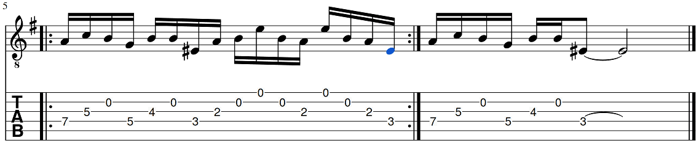

Intro, 1st riff:


Intro, 2nd riff:



Verse, distorted guitar:


<h2>More tabs on the way...</h2>
<ul>
  <li>Children of the Sea</li>
  <li>Lonely is the Word</li>
  <li>Die Young</li>
  <li>...?</li>
</ul>
